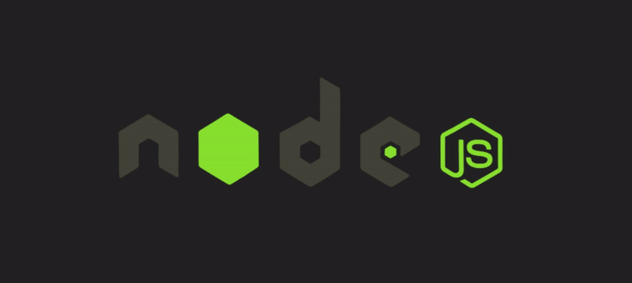
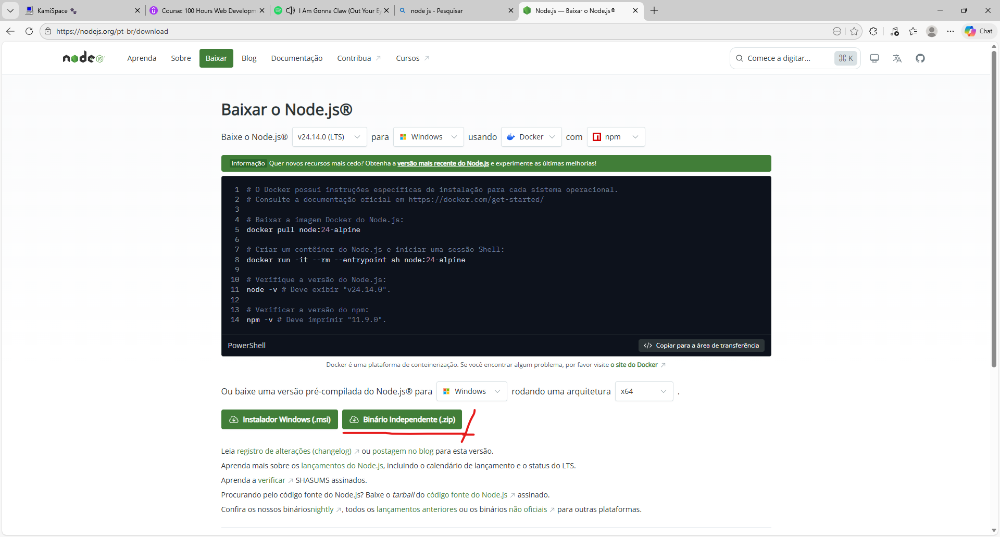
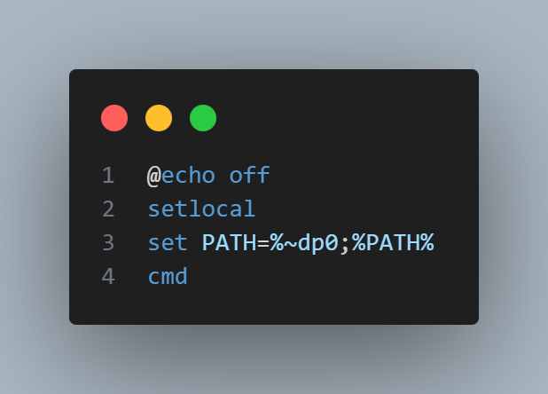

COMO USAR NODE JS SEM DIREITO A ADM?
Em sala de aula já me ocorreu de precisar dessa ferramenta, porém não tinha acesso e nem a senha para o acesso administrador, nesse artigo mostro uma solução emergencial para esses casos!
Primeiro antes de tudo, baixe o node js na forma "Binário independente", insira ele de preferência dentro ou próximo do projeto ( caso insira dentro, lembre-se de adicionar-lo no git ignore para não subir com o projeto, não é interessante )

dentro da pasta do NodeJs insira um arquivo .bat de qualquer nome , porém com o seguinte código dentro dele :

Obs: lembre-se sempre de sair da pasta do node pelo terminal para não executar nada por acidente! Dito isso estamos prontos para utilizar ele!